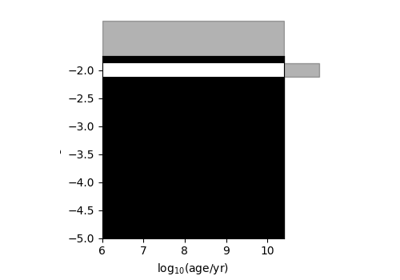

synthesizer.parametric.sfzh#
Functions
- synthesizer.parametric.sfzh.generate_instant_sfzh(log10ages, metallicities, log10age, metallicity, stellar_mass=1)[source]#
simply returns the SFZH where only bin is populated corresponding to the age and metallicity
Examples using synthesizer.parametric.sfzh.generate_instant_sfzh#


Examples using synthesizer.parametric.sfzh.generate_sfzh#


Generate parametric SFZH


Examples using synthesizer.parametric.sfzh.generate_sfzh_from_array#
Generate parametric SFZH
Classes
- class synthesizer.parametric.sfzh.BinnedSFZH(log10ages, metallicities, sfzh, sfh_f=None, Zh_f=None)[source]#
this is a simple class for holding a binned star formation and metal enrichment history. This can be extended with other methods.
- class synthesizer.parametric.sfzh.SFH[source]#
A collection of classes describing parametric star formation histories
- class Constant(parameters)[source]#
- A constant star formation history
sfr = 1; t<=duration sfr = 0; t>duration